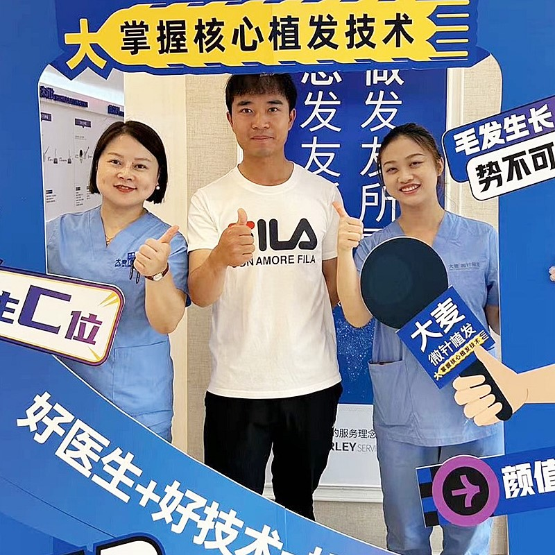
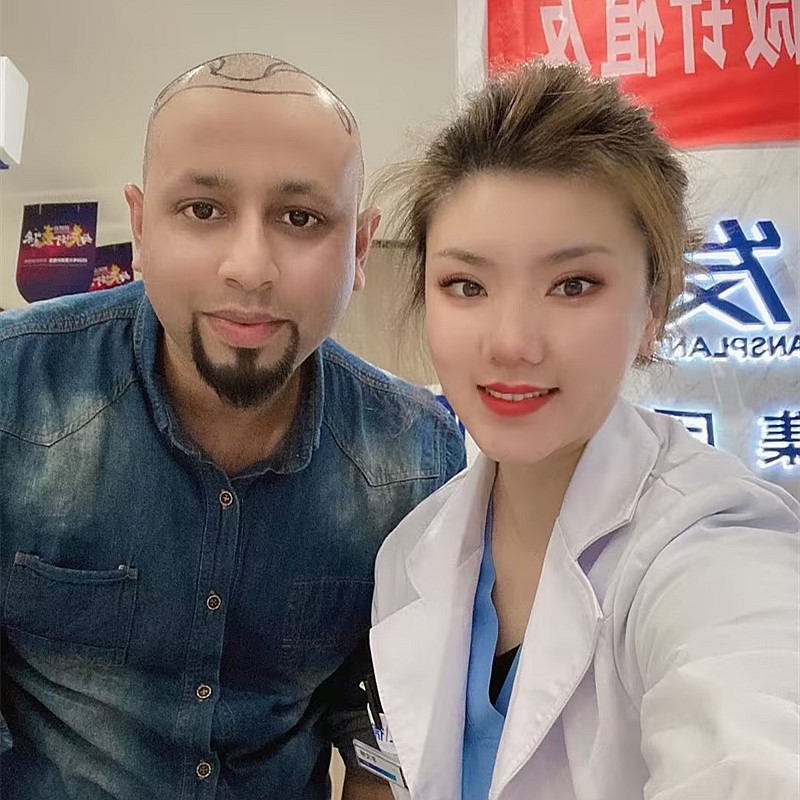

Follicular Unit Transplantation with our hospital's modern refinements

Follicular Unit Transplantation (FUT) is the traditional method involving strip harvesting. While our hospital primarily recommends advanced FUE, we still offer FUT for specific situations where it may be the right choice. Our surgeons have perfected FUT with refined techniques to minimize scarring and maximize results. We always advise which method is best for your individual situation.
Understanding how this traditional technique works
our hospital's refined approach for minimal scarring
Traditional technique with our hospital expertise
Honest recommendation on FUT vs FUE for your case
Meticulous strip extraction with minimal trauma
Precise separation of follicular units under microscope
Careful planning of recipient sites for natural results
Same meticulous care as our FUE procedure
Specialized care for optimal healing of donor site
Industry leader with proven results
Pioneer and leader in microneedle hair transplant technology since 2006
Across major cities in China, all with the same high standards
Innovative microneedle and implant pen technology for superior results
Trusted by patients from around the globe for life-changing results
Full English support for international patients throughout treatment
State-of-the-art facilities and strict safety protocols for your peace of mind
See the amazing transformations our patients have achieved


Moments captured with our satisfied patients

Happy patient showing off their natural-looking hair transplant

Grateful patient celebrating their amazing transformation

Proud patient with their new, natural hairline

Patient showing their incredible transformation journey

Overseas patient thrilled with their results

Patient smiling with their new, natural hair

Satisfied patient with the medical team

Patient showing off their successful hair restoration
Hear from our satisfied patients around the world
"I had advanced balding and needed maximum coverage! FUT was perfect for me! I got thousands of grafts in one session and the results are incredible!"
"After researching on Google and Bing, FUT made the most sense for my budget and coverage needs! The results look completely natural and I saved so much!"
"The FUT procedure was straightforward and the healing was fine! I keep my hair slightly longer so the linear scar is completely invisible! Great value!"
"I came from overseas for FUT hair transplant! I got amazing density at a fraction of what it would cost at home! The results speak for themselves!"
"FUT was the right choice for my extensive hair loss! I got 3500+ grafts in one procedure! The team was professional and my new hair looks amazing!"
"Excellent experience from start to finish! FUT gave me the coverage I wanted at a price I could afford! I couldn't be happier with the results!"
Experience our modern and comfortable facilities

Our state-of-the-art facility

Relax in our premium lounge

Sterile and advanced

Private and professional

Comfortable post-op space

Welcoming entrance
Find answers to common questions about hair transplantation
Contact us for a free consultation
15810155700
+86 13730143529
hairtransplant@qq.com